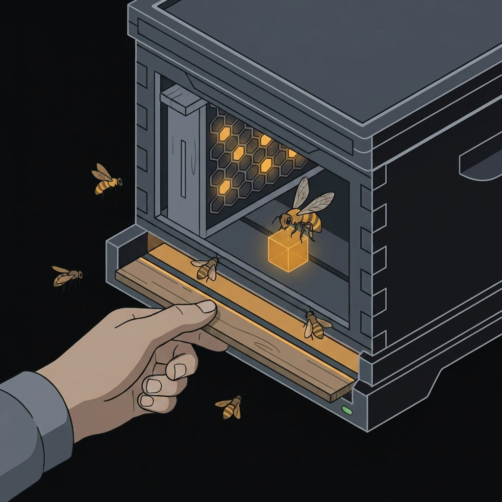

JailBee gives every git branch a full system container of its own: its own services, its own Docker daemon, its own IDE and browser, cloned copy-on-write from one golden image. Several stacks run in parallel on one host without a single port collision, Docker-name clash, or shared-database accident.
Port 8080 is taken. The second branch's dev server, database and Docker Compose project all want names the first branch already holds.
The database is shared. A migration written on one branch quietly changes what the other branch is testing against.
Switching costs twenty minutes. Stash, rebuild, reinstall, re-seed — and then do it again when you switch back.

An agent that cannot reach the network cannot do its job, so the question was never
whether it gets out — it is how wide you leave the opening. jailbee net strict
allows the hosts your build actually needs. You name them the way you'd say them out
loud — api.example.com:443, not an IP range — and JailBee keeps the rule
pointed at the right addresses as they rotate underneath. The filtering happens below
the application, so an ssh or a database connection is covered by the same
list as a web request. jailbee net loose widens it for a set time and
reverts on its own, so nobody leaves it open by forgetting. JailBee shields the host
from what runs inside a container; it does not pretend to shield the code inside from
the world.
jb ide launches the JetBrains IDE that lives in the container onto your own
Wayland session. jb chrome does the same for a browser with its own
profile and its own localhost. jb gui opens a Qt dashboard that spans every
repo on the host.
Isolation, per branch. Every branch you're working on gets a full environment of its own — services, database and all — so two branches never fight over the same port or the same data.
A shortcut for git. Commits move straight between your computer and a branch's container, so you don't have to push to GitHub and pull again just to get code from one place to the other.
Docker, unchanged. Docker and Docker Compose run normally inside each container, so whatever you already use for local development keeps working as-is.
A leash on the network. Each container can only reach the internet addresses your build actually needs, and you can widen that temporarily when you need to — it closes back up on its own.
Your tools, not a copy. The IDE and browser that live inside a container open on your own screen, so working in one feels the same as working locally.
Fast to spin up, easy to watch. New containers start in about a minute because they're cheap copies of one shared image, and a live dashboard shows every one of them across every project.
Submodules come along. If your project pulls in other repositories, they are set up for you in every new container and travel with your commits in both directions — nothing to prepare by hand on either side.
A save point before the risky part. Take a snapshot of a container before you let an agent loose in it, and put it back the way it was in seconds when the run goes wrong.
Four other tools solve neighbouring problems, and one of them draws a stronger boundary than JailBee does. Here is where each of them fits.
| Tool | What it is | Pick it instead when |
|---|---|---|
| Dev Containers |
The standard devcontainer.json, implemented by VS Code, Codespaces
and JetBrains.
|
a shared toolchain is all you need — and it has to work on Windows and macOS too. |
| BranchBox | A git worktree plus a Docker Compose project and a devcontainer, per feature. | you want parallel branches cheaply and you trust what runs inside them. |
| nono | A fence around one agent process, with a separate policy per tool it calls. | one agent needs fine-grained rules rather than a system of its own. It also runs inside a JailBee container. |
| Docker Sandboxes | A microVM per agent run, with its own kernel and a deny-by-default network proxy. | you want a hypervisor between the agent and your laptop. That is a stronger wall than JailBee's. |
| JailBee | A full system container per branch — services, Docker, IDE and browser, all inside the boundary. | the runtime is the hard part: a stack that boots, listens and renders, several of them at once. |
Read the full comparison — what each tool does with your working tree, your credentials and the network, and what JailBee costs you.
JailBee needs a Linux host running Incus, and either uv or pipx to install the CLI. Ubuntu 26.04 gives nested Docker out of the box. Host setup — Incus, firewall, UID mapping, kernel keyring limits — is a one-time job with a few moving parts, and the installation guide walks it end to end. Running from an Apple Silicon Mac through a Linux VM is supported, experimentally.
uv tool install jailbee
uv tool install 'jailbee[gui]'
The gui extra adds the Qt dashboard. JailBee is an ordinary PyPI package,
so pip works inside a virtualenv — but on Ubuntu 24.04+ it refuses to
install into the system Python, which is what these two tools handle for you.
jailbee config initjailbee doctorjailbee initjailbee base buildjailbee new feat/my-branch